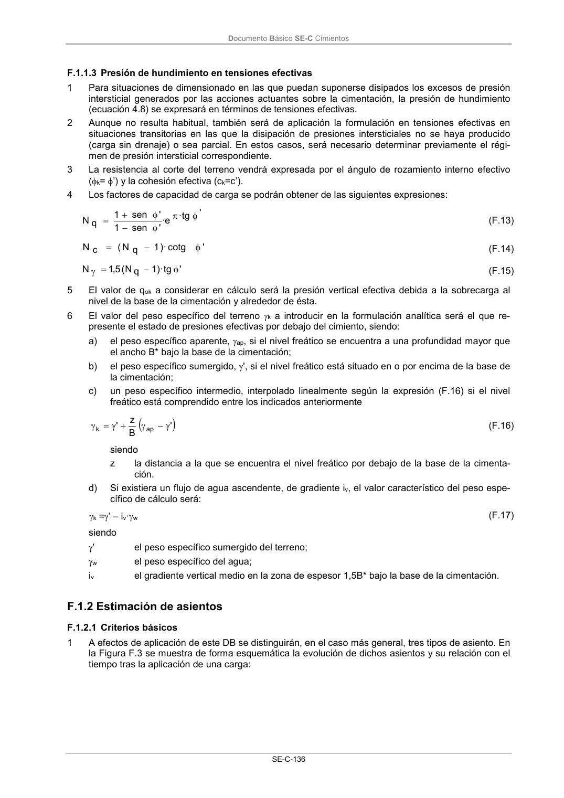

DB-SE-C Cimientos · edición 2019-12-20 · capa oficial
Documento DB-SE-C-oficial · SHA-256 del PDF a71133f4b0dca253e45ea3071c70f2a512354bcc5cd841bf89b1a502f567ac5e
Página física 141 de 165.
Copia fiel del PDF fuente · Fuente oficial
Ficha de la disposición en la fuente oficial
Formato: Texto de la página (Markdown)
Documento Básico SE-C Cimientos SE-C-136 F.1.1.3 Presión de hundimiento en tensiones efectivas 1 Para situaciones de dimensionado en las que puedan suponerse disipados los excesos de presión intersticial generados por las acciones actuantes sobre la cimentación, la presión de hundimiento (ecuación 4.8) se expresará en términos de tensiones efectivas. 2 Aunque no resulta habitual, también será de aplicación la formulación en tensiones efectivas en situaciones transitorias en las que la disipación de presiones intersticiales no se haya producido (carga sin drenaje) o sea parcial. En estos casos, será necesario determinar previamente el régi- men de presión intersticial correspondiente. 3 La resistencia al corte del terreno vendrá expresada por el ángulo de rozamiento interno efectivo (k= ’) y la cohesión efectiva (ck=c’). 4 Los factores de capacidad de carga se podrán obtener de las siguientes expresiones: ' tg · e ·' sen 1 ' sen 1 q N (F.13) ' cotg )· 1 q N ( c N (F.14) ' tg )· 1 q N ( 5 ,1 N (F.15) 5 El valor de qok a considerar en cálculo será la presión vertical efectiva debida a la sobrecarga al nivel de la base de la cimentación y alrededor de ésta. 6 El valor del peso específico del terreno k a introducir en la formulación analítica será el que re- presente el estado de presiones efectivas por debajo del cimiento, siendo: a) el peso específico aparente, ap, si el nivel freático se encuentra a una profundidad mayor que el ancho B* bajo la base de la cimentación; b) el peso específico sumergido, ', si el nivel freático está situado en o por encima de la base de la cimentación; c) un peso específico intermedio, interpolado linealmente según la expresión (F.16) si el nivel freático está comprendido entre los indicados anteriormente ' B z ' ap k (F.16) siendo z la distancia a la que se encuentra el nivel freático por debajo de la base de la cimenta- ción. d) Si existiera un flujo de agua ascendente, de gradiente iv, el valor característico del peso espe- cífico de cálculo será: k =’ – iv·w (F.17) siendo ' el peso específico sumergido del terreno; w el peso específico del agua; iv el gradiente vertical medio en la zona de espesor 1,5B* bajo la base de la cimentación. F.1.2 Estimación de asientos F.1.2.1 Criterios básicos 1 A efectos de aplicación de este DB se distinguirán, en el caso más general, tres tipos de asiento. En la Figura F.3 se muestra de forma esquemática la evolución de dichos asientos y su relación con el tiempo tras la aplicación de una carga:
